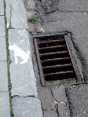
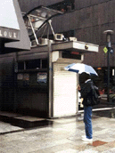
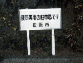
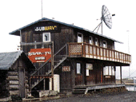
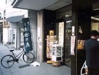

Funny photos

Brugge（Belguim）の街角で見付けた。単なるどぶ穴にしか見えないけれど、良く見ると犬の絵が。犬のトイレなのだろうか？

銀座の朝、何故か交番が閉まっている。ココでは営業時間があるのだろうか？
早く空かないかと時計を見ながら待つ人が居る。

松坂では、ちょっと公衆便所に行くのにも車で行くのだろうか。不思議…。

アラスカのHOMERにて。とても地下鉄なんて走っているところではない。また、木造のサブウェイも初めてみました。

漬け物の美味しい本屋さん。
Last update: May 6 1998